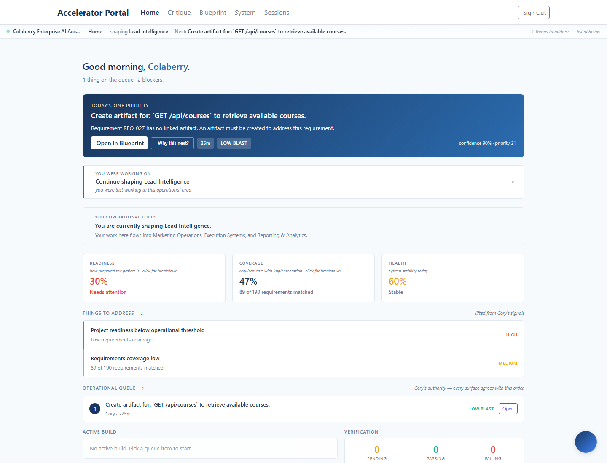
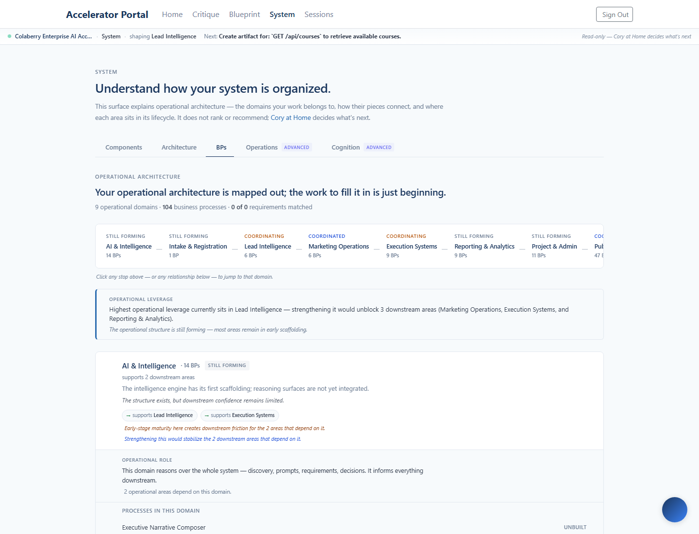
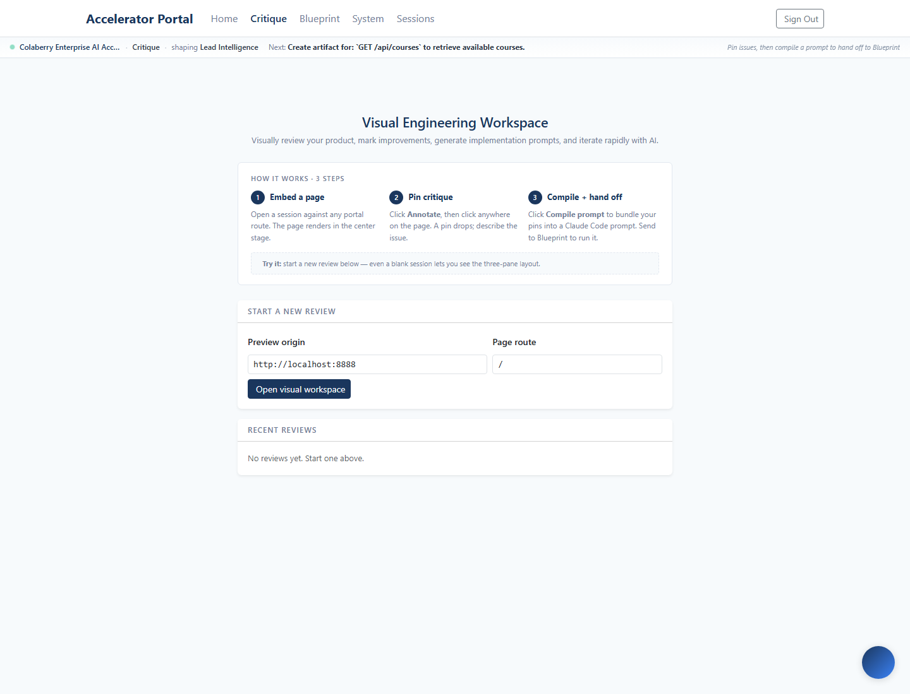
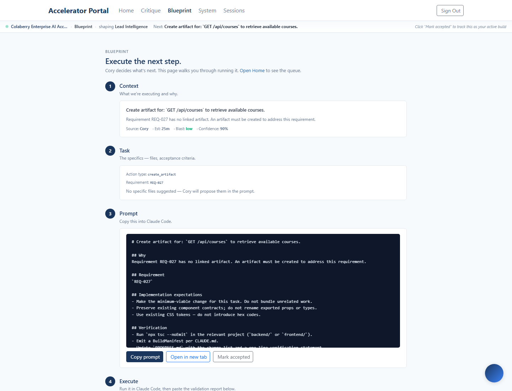

Shipped 2026-05-15 to enterprise.colaberry.ai
(commit 842acde). Three surgical changes — persistent
focus in the context bar, formalized surface-arrival timing with
reduced-motion respect, and Home + System container rhythm aligned
— turn the workspace from four stitched-together pages into one
continuous operational environment. No new components. No motion
libraries. No animation framework.
prefers-reduced-motion.
The persistent context bar at the top of every authenticated
surface now carries one calm line: "shaping <Focus
Domain>". The signal comes from
useWorkspaceMemory().memory.lastBpDomainLabel —
written when the operator engages a domain on System BPs, read
everywhere else. The operator never loses orientation when
moving rooms.
lastBpDomainLabel; the bar picks it up immediately.PortalLayout, so the signal travels without per-surface plumbing.The "shaping Lead Intelligence" line appears identically on every surface. The operator sees a unified environmental frame instead of four independent pages each with their own context.




The existing 220ms wsFadeIn outlet animation now
lives in a .ws-surface-arrival class with a
@media (prefers-reduced-motion: reduce) guard.
Operators who opt out of motion get an instant surface swap with
no transform.
No new motion was added — only formalizing what was there and honoring an accessibility preference that was previously ignored.
| Before | After |
|---|---|
Inline style={{ animation: 'wsFadeIn 220ms ease-out' }} |
Class .ws-surface-arrival with the keyframe + a media-query guard |
| Animation fires for every operator, including those with reduced-motion preferences | Animation skipped entirely when prefers-reduced-motion: reduce |
| A11y gap | Honored |
Three of the four main surfaces had drifted to different max-widths and top-paddings. The two operational architecture surfaces — Home and System — now share rhythm.
| Surface | Before | After | Reasoning |
|---|---|---|---|
| Cory Home | max-width: 1080 · padding: 1.5rem 1rem 3rem |
(unchanged) | Set the baseline; the L1 authority surface. |
| SystemView | max-width: 1100 · padding: 2rem 1rem 4rem |
max-width: 1080 · padding: 1.5rem 1rem 3rem Aligned |
The L4 understanding surface should sit at the same rhythm as Home so the eye doesn't reset between them. |
| ExecutionLane | max-width: 880 |
(unchanged) | Deliberate — narrower reading width for the step-by-step Blueprint format. |
| VisualWorkspacePage | 3-pane layout (own shell) | (unchanged) | Deliberate — Critique needs its sidebar + stage + details split. |
Scan for places where the workspace still feels stitched together. The findings below are documented as deliberate, not as bugs to fix in this sprint.
| Surface | Audit finding | Verdict |
|---|---|---|
| SystemView Advanced tabs (Operations, Cognition) | Lazy-loaded with their own internal shells. | Deliberate — power-user surfaces, distinct from the editorial main flow. |
| Sessions | Different rhythm + spacing from Home/System/Critique/Blueprint. | Deliberate — coaching surface, orthogonal to the build loop. |
Legacy /portal/project/system-legacy + /portal/project/blueprint-legacy | Different containers; hidden by WorkspaceContextBar. | Skipped — rollback-only routes, not part of the continuous experience. |
| Auth + verify surfaces | Different shell; bar hidden. | Deliberate — pre-workspace. |
Net stats: 3 files modified (no new files), 242 tests still passing across 7 suites (no test churn because no logic changed — only composition + persistent surface extension). No backend changes, no new components, no new motion.
Two scope items deferred: